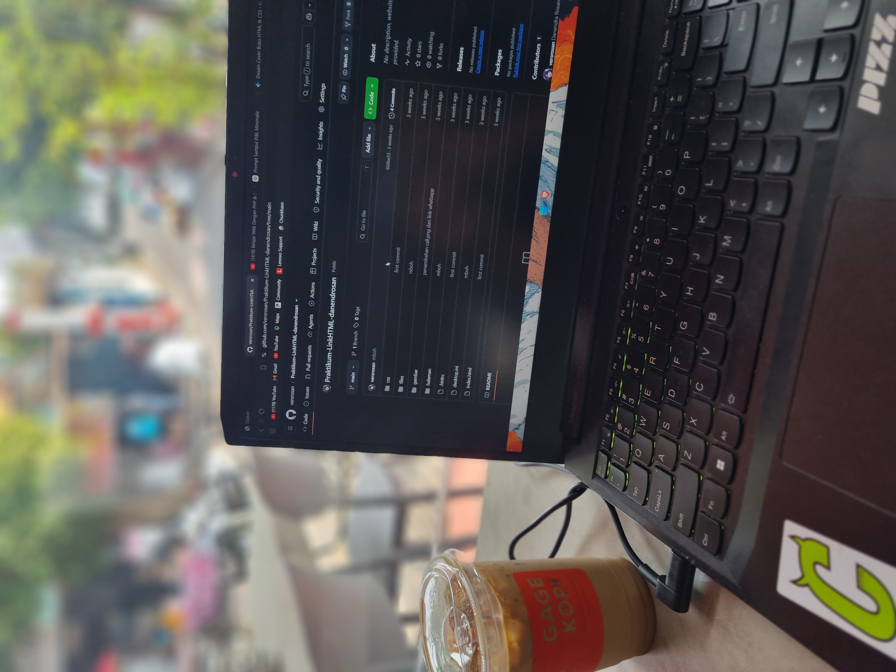
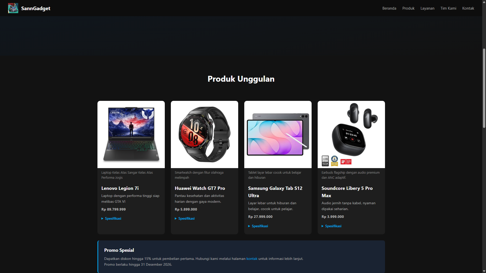
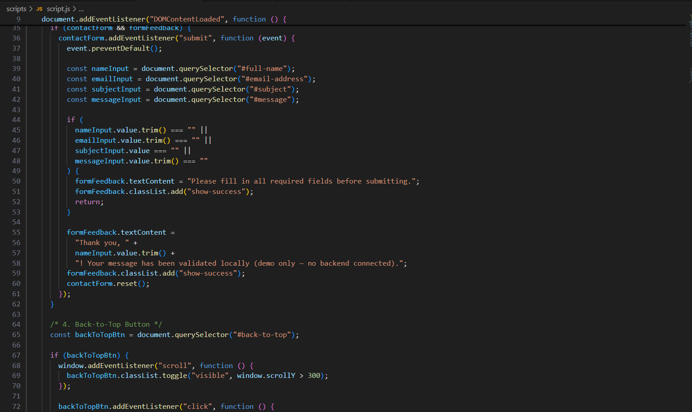
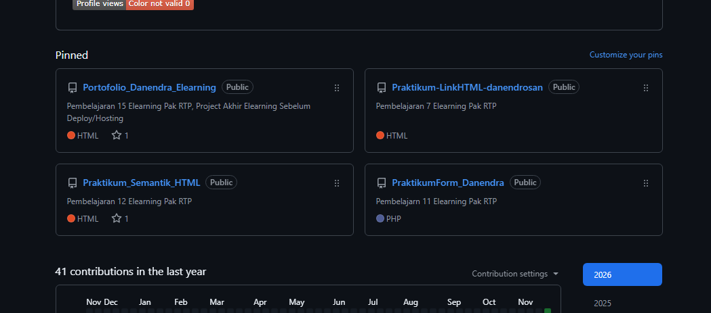
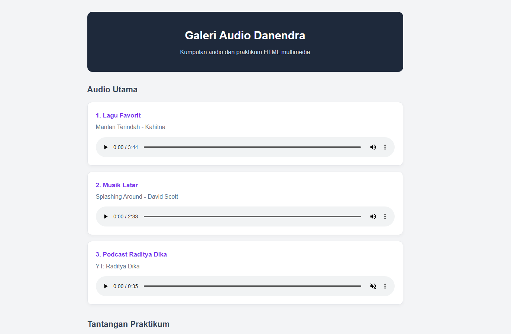

Web Development
Membangun halaman website yang terstruktur rapi menggunakan HTML5 semantik, CSS3 modern, dan dasar-dasar JavaScript.
Student Developer & Technology Enthusiast
Saya sedang mempelajari pengembangan website, teknologi, dan berbagai hal menarik di dunia IT.
Bidang dasar yang sedang saya pelajari dan praktikkan selama menempuh pendidikan di SMK.
Membangun halaman website yang terstruktur rapi menggunakan HTML5 semantik, CSS3 modern, dan dasar-dasar JavaScript.
Merancang tata letak antarmuka yang bersih, responsif, dan nyaman dibaca pada layar desktop maupun perangkat seluler.
Mempelajari konsep dasar jaringan komputer, konfigurasi perangkat, serta cara kerja sistem informasi di balik website.

Saya adalah siswa Sekolah Menengah Kejuruan (SMK) di Indonesia yang memiliki ketertarikan besar pada dunia pengembangan web dan jaringan komputer. Website portofolio ini merupakan proyek akhir pembelajaran HTML untuk mendokumentasikan progres belajar saya.
Kumpulan latihan dan proyek pembelajaran yang saya kerjakan untuk mengasah pemahaman kode.

Latihan membuat halaman web statis dengan struktur semantik, Flexbox, CSS Grid, dan tampilan responsif.
View on GitHub →
Eksperimen interaksi halaman sederhana menggunakan manipulasi DOM, event listener, dan validasi formulir.
View on GitHub →
Dokumentasi tugas praktik pembelajaran ke-7 hingga ke-15 yang tersusun rapi sebagai arsip belajar.
Open Learning Page →
Uji coba elemen tabel, pemutar audio/video HTML5, serta tata letak komponen antarmuka modern.
Explore Demos →Teknologi yang sedang saya pelajari secara bertahap.